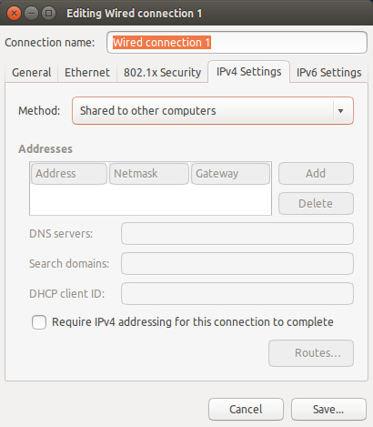

Eduardo Colabardini
Raspberry Pi headless setup & Wi-Fi sharing to ethernet
This is a step-by-step guide of how to set up your Raspberry Pi to run “headless”, that is, access it via a network connection without a keyboard or display. This guide uses Raspbian, the “Debian Jessie” version of Linux, but it should work with other versions.
Download the latest Raspian image and unzip it:
wget https://downloads.raspberrypi.org/raspbian_latest -O raspbian.zip
unzip raspbian.zip
Insert you SD Card and discover the mounted partitions (usually starts with /dev/mmcblk0).
$ sudo mount
/dev/sda11 on /home type ext4 (rw)
/dev/sda1 on /boot/efi type vfat (rw)
…
/dev/mmcblk0p2 on /media/dudu/402bfe3d-37db-48a7-a515-31edccf953df type ext4 (ro,nosuid,nodev,uhelper=udisks2)
/dev/mmcblk0p1 on /media/dudu/boot type vfat (ro,nosuid,nodev,uid=1000,gid=1000,shortname=mixed,dmask=0077,utf8=1,showexec,flush,uhelper=udisks2)
And umount them:
$ sudo umount /dev/mmcblk0p1
$ sudo umount /dev/mmcblk0p2
Write the Raspbian image to your SD Card (there’s no need to specify the partition at the of parameter since they’ll be created again):
$ sudo dd bs=1M if=./raspbian.img of=/dev/mmcblk0
4147+0 records in
4147+0 records out
4348444672 bytes (4,3 GB) copied, 318,742 s, 13,6 MB/s
$ sync
If you have access to your router/hub then you can connect the ethernet cable directly to it and the Raspberry Pi will automatically be configured through DHCP. If you don’t have physical access to the router you can share your Wi-Fi connection to ethernet following the steps below.
Open your Network Connections, edit the Wired Connection and under IPv4 Settings select the method Shared to other computers.

Now insert your SD Card at the Raspberry Pi and power it up!

Wait for a while and check that a new IP is being announced on eth0 (in my case the 10.42.0.75)
$ arp -a
(192.168.0.122) at 9c:d2:1e:06:c7:f6 [ether] on wlan0
(192.168.0.1) at c8:3a:35:19:88:10 [ether] on wlan0
(192.168.0.101) at 6c:ad:f8:b2:c6:c2 [ether] on wlan0
$ arp -a
(192.168.0.122) at 9c:d2:1e:06:c7:f6 [ether] on wlan0
(192.168.0.1) at c8:3a:35:19:88:10 [ether] on wlan0
(10.42.0.75) at b8:27:eb:98:8e:e3 [ether] on eth0
(192.168.0.101) at 6c:ad:f8:b2:c6:c2 [ether] on wlan0
Finally you can establish a SSH connection using the default username pi and password raspberry:
$ ssh pi@10.42.0.75
Check your network connection:
$ nc -vz ecolabardini.github.io 443
Connection to ecolabardini.github.io 443 port [tcp/https] succeeded!
Enjoy your Raspberry Pi ;-)